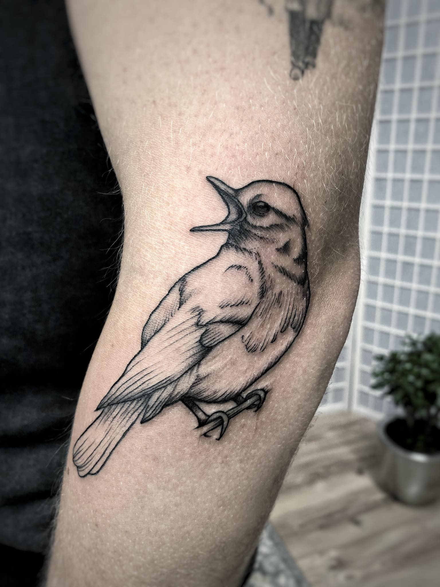
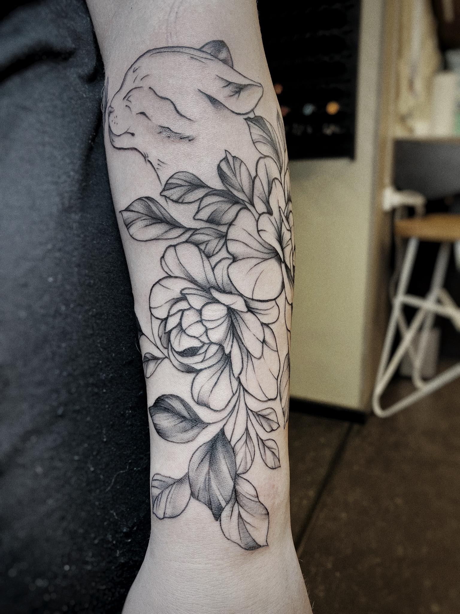
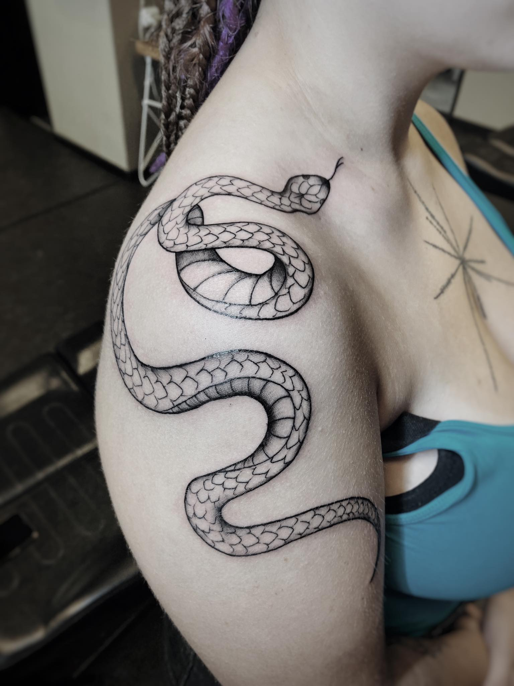
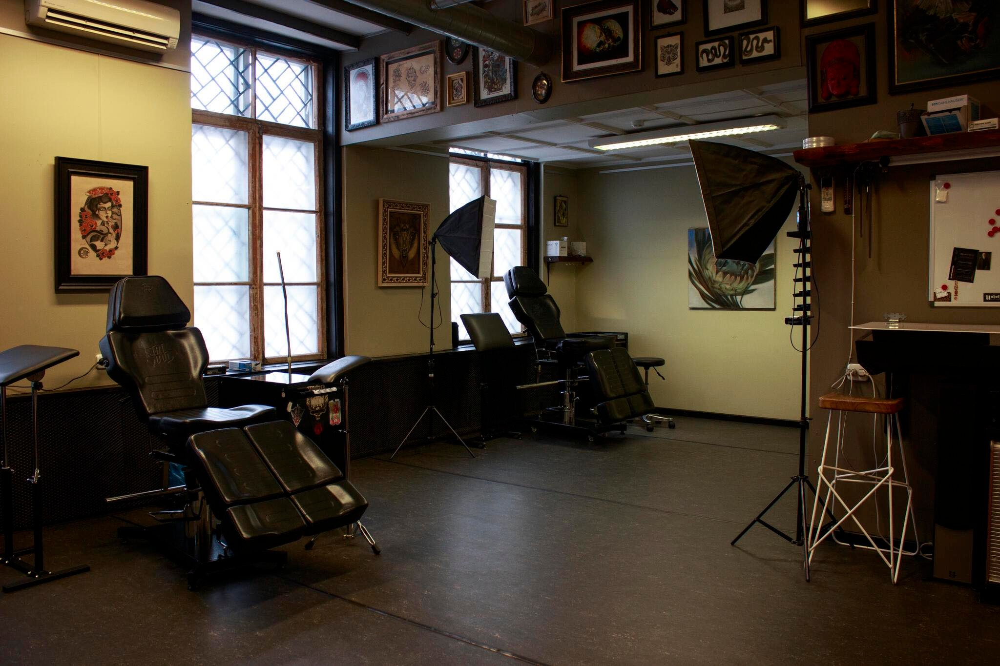

Я начала татуировать осенью 2021 года. Я проходила практику в одной из студий, затем еще год занималась этим самостоятельно. Наконец, в августе 2022 года, я начала работать в Backbone tattoo студии. На самом деле о становление тату мастером я думала на протяжении всей жизни. Уже с 10 лет я листала книги о татуировках в книжных магазинах, но свою первую машинку я купила только спустя 9 лет благодаря Тиктоку. Увидела видео, где человек набивал татуировки на искусственной коже, и подумала что тоже хочу это попробовать. Не смотря на то что я боюсь крови и иголок, процесс набивание татуировок у меня ассоциациируется с искусством, а не с медицинским процессом. В данный момент я делаю графические татуировки, но в будущем я хотела бы перейти к нетрадиционному стилю. Я обожаю набивать растение и животных, например пионы и бабочки. Я заинтересована скорее в больших проектах. Моя почасовая ставка 80€/ч.
